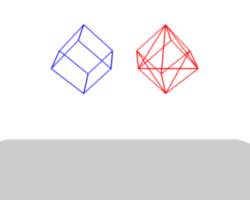
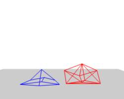
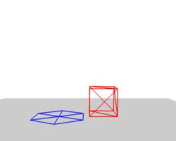
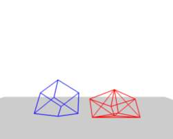
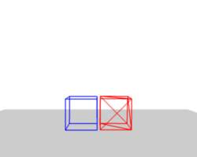
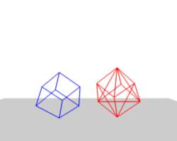
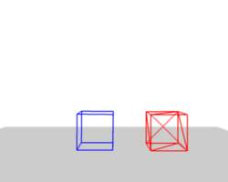
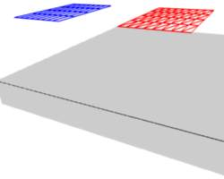
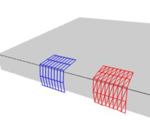
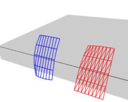

Interior¶
{kind=link}
Vertices and forces along their connection edges.
To create a connection between the vertices of a Soft Body object there have to be forces that hold the vertices together. These forces are effective along the edges in a mesh, the connections between the vertices. The forces act like a spring. Fig. Vertices and forces along their connection edges. illustrates how a 3×3 grid of vertices (a mesh plane in Blender) are connected in a Soft Body simulation.
But two vertices could freely rotate if you do not create additional edges between them. Have you ever tried building a storage shelf out of four planks alone? Well - do not do it, it will not be stable. The logical method to keep a body from collapsing would be to create additional edges between the vertices. This works pretty well, but would change your mesh topology drastically.
{kind=link}
Additional forces with Stiff Quads enabled.
Luckily, Blender allows to define additional virtual connections. On one hand we can define virtual connections between the diagonal edges of a quad face (Stiff Quads Fig. Additional forces with Stiff Quads enabled.), on the other hand we can define virtual connections between a vertex and any vertices connected to it’s neighbors Bending Stiffness. In other words, the amount of bend that is allowed between a vertex and any other vertex that is separated by two edge connections.
Edges 设置¶
The characteristics of edges are set with the Soft Body Edge properties.
- Use Edges
- Allow the edges in a Mesh Object to act like springs.
- Pull
- The spring stiffness for edges (how much the edges are allowed to stretch). A low value means very weak springs (a very elastic material), a high value is a strong spring (a stiffer material) that resists being pulled apart. 0.5 is latex, 0.9 is like a sweater, 0.999 is a highly-starched napkin or leather. The Soft Body simulation tends to get unstable if you use a value of 0.999, so you should lower this value a bit if that happens.
- Push
- How much the Softbody resist being scrunched together, like a compression spring. Low values for fabric, high values for inflated objects and stiff material.
- Damp
- The friction for edge springs. High values (max of 50) dampen the Push / Pull effect and calm down the cloth.
- Plastic
- Permanent deformation of the object after a collision. The vertices take a new position without applying the modifier.
- Bending
- This option creates virtual connections between a vertex and the vertices connected to it’s neighbors. This includes diagonal edges. Damping also applies to these connections.
- Length
- The edges can shrink or been blown up. This value is given in percent, 0 disables this function. 100% means no change, the body keeps 100% of his size.
- Stiff Quads
- For quad faces, the diagonal edges are used as springs. This stops quad faces to collapse completely on collisions (what they would do otherwise).
- Shear
- Stiffness of the virtual springs created for quad faces.
Preventing Collapse¶
To show the effect of the different edge settings we will use two cubes (blue: only quads, red: only tris) and let them fall without any goal onto a plane (how to set up collision is shown on the page Collisions).

Frame 1. |

Frame 36. |

Frame 401. |
{kind=link}
{kind=link}
{kind=link}
In Fig. Without Stiff Quads., the default settings are used (without Stiff Quads). The “quad only” cube will collapse completely, the cube composed of tris keeps it’s shape, though it will deform temporarily because of the forces created during collision.

Frame 36. |

Frame 401. |
{kind=link}
{kind=link}
In Fig. With Stiff Quads., Stiff Quads is activated (for both cubes). Both cubes keep their shape, there is no difference for the red cube, because it has no quads anyway.

Frame 36. |

Frame 401. |
{kind=link}
{kind=link}
The second method to stop an object from collapsing is to change it’s Bending Stiffness. This includes the diagonal edges (Damping also applies to these connections).
In Fig. Bending Stiffness. Blend file, Be is activated with a strength setting of 1. Now both cubes are more rigid.

Two planes going to collide. |

No bending stiffness, Frame 101. |

High bending stiffness (10), Frame 101. |
{kind=link}
{kind=link}
{kind=link}
Bending stiffness can also be used if you want to make a subdivided plane more plank like. Without Be the faces can freely rotate against each other like hinges Fig. No bending stiffness, Frame 101.. There would be no change in the simulation if you activated Stiff Quads, because the faces are not deformed at all in this example.
Bending stiffness on the other hand prevents the plane from being - well - bent.